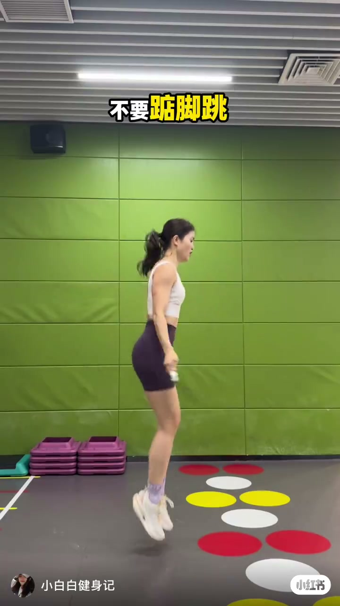
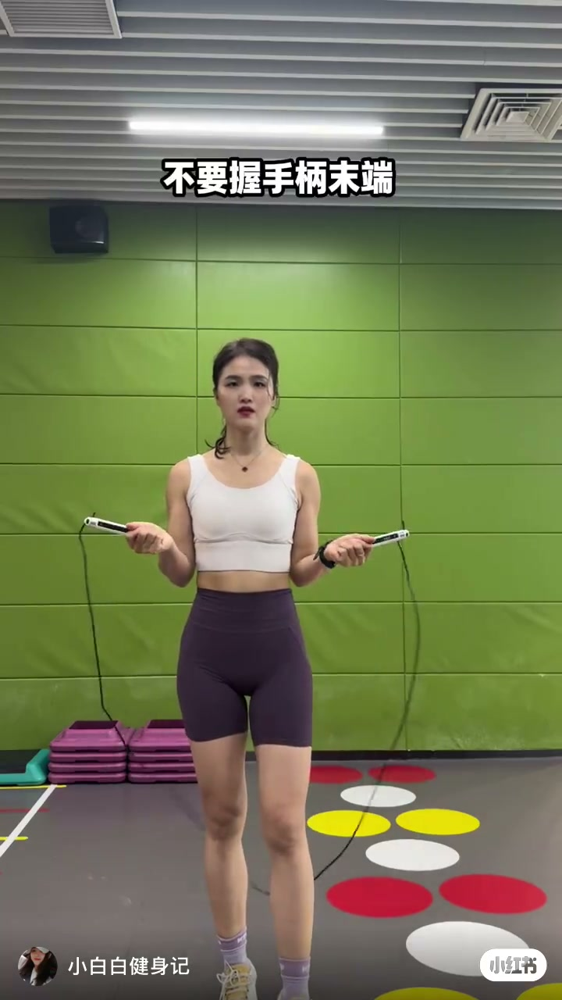
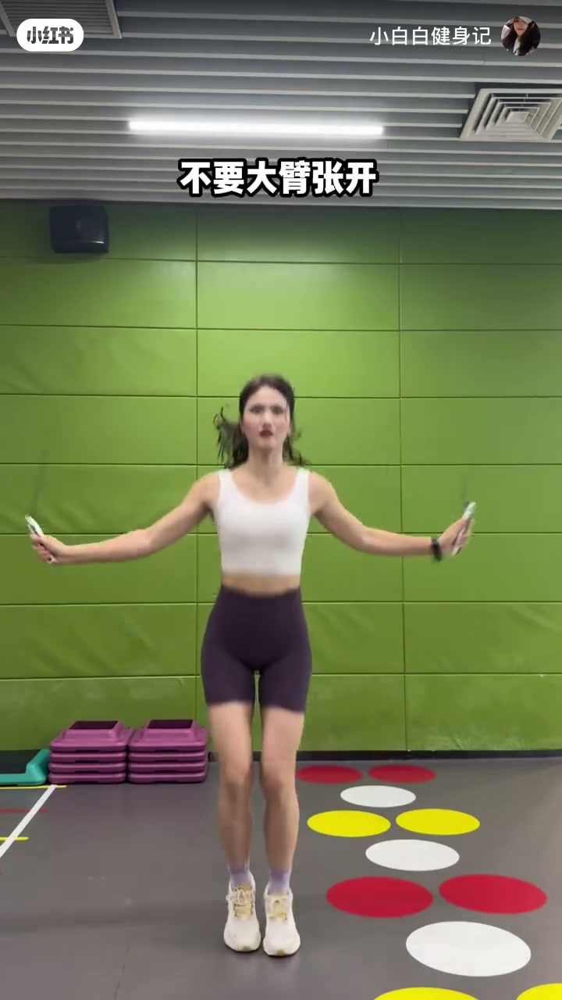
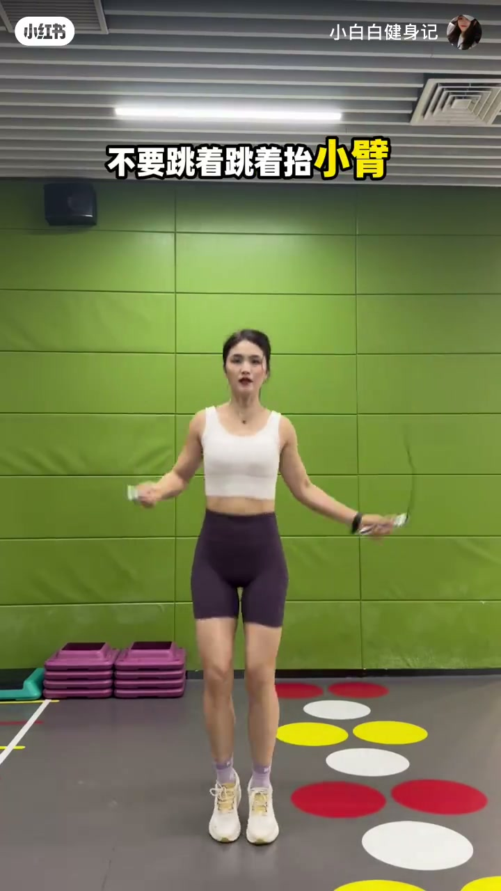
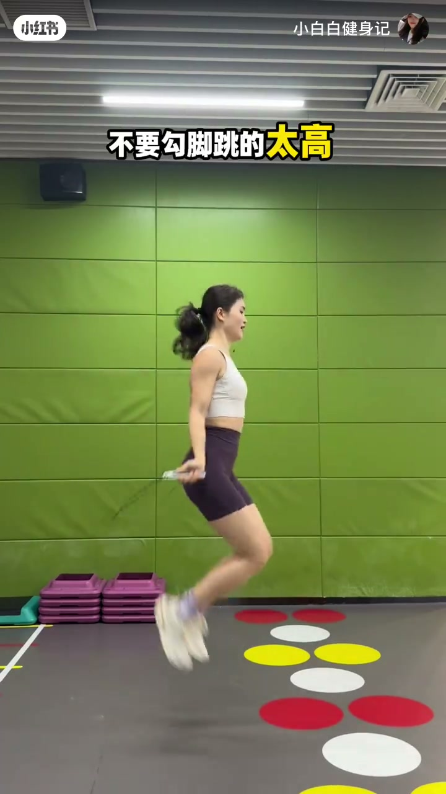
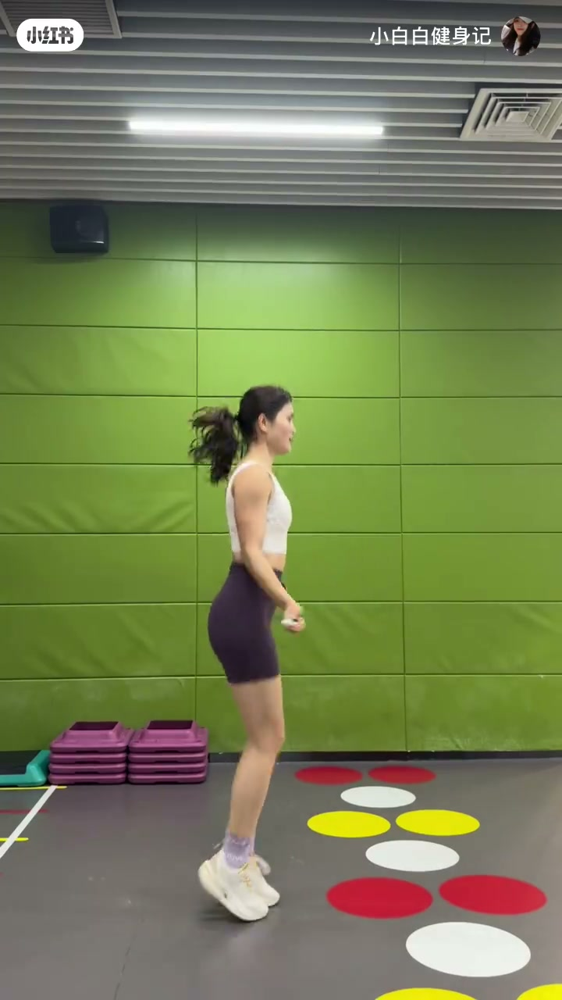

内容要点
「小白白健身记」用约 24 秒把新手跳绳易错点压成三条屏幕禁令。Whisper 只稳定识别开场一句「不要踮脚跳」；后半段主要靠画面字幕推进，属于视觉型短视频，不以口播章节凑数。
知识结构
[00:00→00:08]
踮脚警告
开场大字与侧身示范：不要踮脚跳。
[00:08→00:18]
小臂与腕
字幕提醒：不要跳着跳着抬小臂；转绳应落在手腕控制。
[00:18→00:24]
勾脚与高度
不要勾脚、不要跳得太高；收束问「你学会了吗」。
总结
新手先抄三条负向清单：脚后跟别长期踮起、前臂别越跳越高、别勾脚冲高度。
00:00-00:08第一条：不要踮脚跳
画面一开始就叠黄字「不要踮脚跳」，作者侧身起跳，脚跟离地。笔记文案把自己定位成正确与错误姿势对比，让新手直接抄作业；片中用否定句把错误动作钉住，而不是长篇讲解正确力学。

[00:01] 开场大字「不要踮脚跳」，侧身起跳时脚跟离地，示范踮脚问题。
Opening title “Don’t jump on tiptoes”; side jump with heels off the ground shows the problem.

[00:05] 正面持绳站立，绳在身后触地，进入对比示范前的准备姿态。
Front stance holding the rope, cord touching the floor behind—ready pose before the comparison.
00:08-00:18第二条：不要抬小臂
进入正面腾空段落后，字幕改成「不要跳着跳着抬小臂」，「小臂」被标黄。意思是跳久了手臂容易越抬越高，转绳应从手腕完成，而不是靠前臂抡圈。口播在此段几乎空白，依据是屏幕字与持柄高度。

[00:10] 正面腾空跳绳，手臂外展持柄，示范跳跃中段动作。
Front mid-air jump with arms out holding the handles—middle of the jump demo.

[00:15] 黄字强调「不要跳着跳着抬小臂」，提醒用腕转绳而不是抬前臂。
Yellow text stresses “don’t raise your forearms as you jump”—turn the rope with wrists, not raised forearms.
00:18-00:24第三条：不要勾脚跳太高
侧身镜头叠字「不要勾脚跳的太高」，「太高」标黄。同时点名两个问题：脚尖向后勾，以及跳跃高度过大。结尾字幕「你学会了吗」，把三条禁令交给观众自检。视频未交代具体理想高度或落地部位的数值标准。

[00:20] 侧身跳跃叠加「不要勾脚跳的太高」，点出勾脚与跳得过高两个问题。
Side jump with “don’t hook your feet and jump too high,” naming hooked toes and excess height.

[00:23] 收束字幕「你学会了吗」，示范继续侧身轻跳。
Closing subtitle “Have you got it?” while the light side jump continues.
详细文字转录
Whisper medium 仅识别到 1 段非空口播；其余要点来自画面字幕。以下按原始分段呈现。
不要踮脚跳